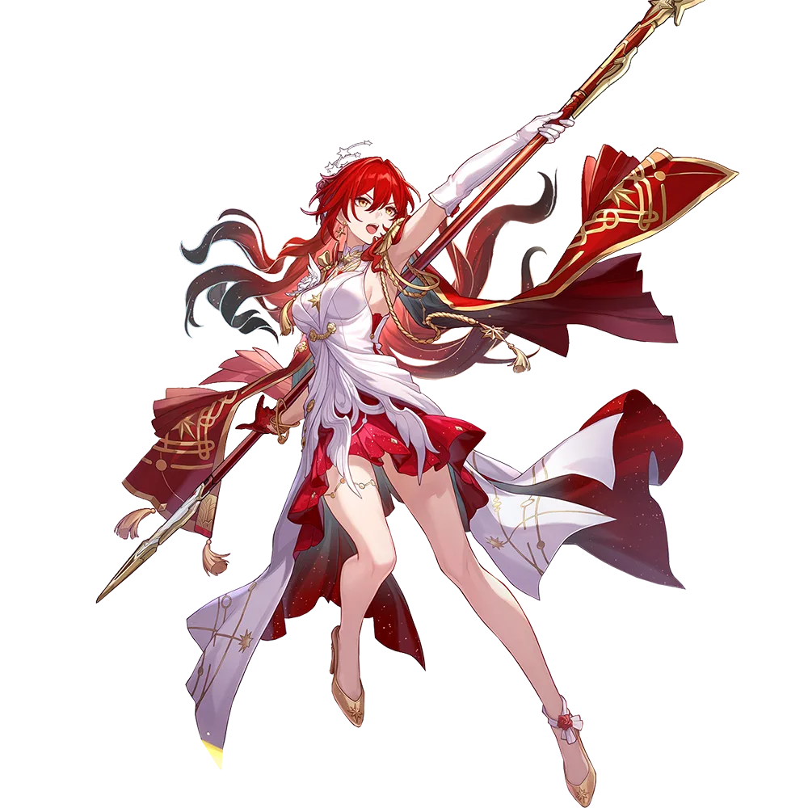

Himeko Nova
Best Himeko Nova build guide for Honkai Star Rail. See Himeko Nova's best Relics, Light Cones, teams, Eidolons, Trace priority, and how to play Himeko Nova.
🔍 Detail Skill
Semua skill aktif dan pasif beserta efeknya.
Deals Fire DMG equal to #1[i]% of Himeko • Nova's ATK to one enemy.
After using Skill, immediately regains all uses of Assist Skill and Himeko • Nova gains Navigator's Semaphore, lasting for 3 turn(s). At the start of each of Himeko • Nova's turn, the duration is reduced by 1. When Himeko • Nova has Navigator's Semaphore, DMG dealt by all allies increases by #1[i]%. At the start of every turn, immediately regains 1 use of Assist Skill.
While Himeko • Nova is on the field, immediately deploys the Territory Starblazer Visioscape, causing a Starblazer to appear on the field and granting all ally characters 1 Assist Skill usage. Ally characters can use the Assist Skill to command the Starblazer to attack enemies. Using the Assist Skill is considered as Himeko • Nova using her Skill. Himeko • Nova's All-Type RES PEN increases by #1[i
When Himeko • Nova is in the team, increases max Technique Points by 3. After using the Technique, she enters the Cruise state, lasting for 30 seconds. Actively using the Technique consumes 2 Technique Points and immediately attacks all enemies within a certain range. After entering combat, immediately uses Skill 1 time at the start of each wave. If attacking a Normal Enemy, immediately defeats th
⚔ Light Cone Terbaik
Diurutkan dari yang paling kuat. Persentase menunjukkan performa relatif terhadap pilihan terbaik.
💎 Relic Set Terbaik
Set terbaik untuk karakter ini, diurutkan berdasarkan prioritas.
📊 Stat Utama
Stat yang dicari pada tiap slot.
👥 Tim yang Direkomendasikan
Karakter yang sering dipasangkan bersama Himeko Nova.
 Welt
Welt
 Mortenax Blade
Mortenax Blade
 Cerydra
Cerydra
 Sunday
Sunday
 Trailblazer • Remembrance
Trailblazer • Remembrance
 Dan Heng • Permansor Terrae
Dan Heng • Permansor Terrae
🔗 Lanjutkan
Build ini dirangkum dari Prydwen Institute. Starwise tidak menghitung sendiri. Angka bisa berubah setelah patch atau karakter baru rilis.